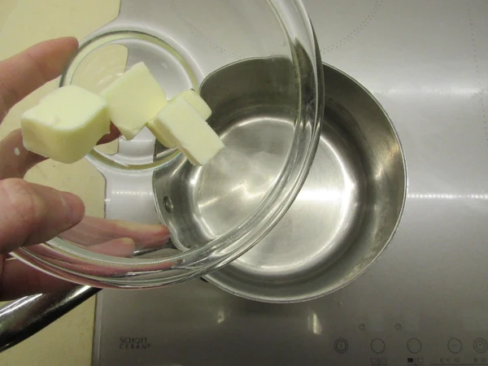

Che si tratti di un’amorevole mamma che prepara la merenda,
di un gruppetto di studenti che fa una pausa dallo studio
oppure di fanatici della cucina veloce ma pur sempre originale,
le crepe sono sempre la scelta giusta! In questa ricetta delle
crepe dolci e salate scoprirete come adattare l'impasto neutro
alle farciture più golose, dalle crepe alla Nutella alle crespelle
gorgonzola e radicchio, al forno o al prosciutto! Ci sono soltanto
poche cose da sapere per riuscire a preparare crepe dolci e salate perfette,
ve le raccontiamo subito! Siamo certi che ne farete una bella scorta,
scoprendo quanto è facile conservarle! Poi però fateci sapere qual è la vostra preferita!


Per preparare le crepe dolci e salate iniziate sciogliendo dolcemente il burro in un pentolino
Lasciatelo intiepidire e nel frattempo rompete le uova in una ciotola dai bordi alti. Mescolate con una frusta e unite il latte
Continuate a mescolare sino ad ottenere un composto omogeneo.